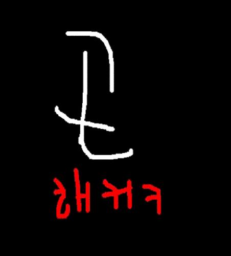

*공지*
이 페이지는
GoN
신입생 선발 페이지 입니다.
지원 페이지에 있는
빈칸 3개
를 채워주세요. (자기소개, 이름, 핸드폰)
지원하신 정보는
안전하게
처리되며 신입생 선발 이후
폐기처분
됩니다.
곤으로 지금 바로 지원하세요 ! (아래
'GO!'
를 누르시면 됩니다.)

GO!
*주의: 지원은 2월 12일(일요일) 오후 11시 59분에 마감됩니다.